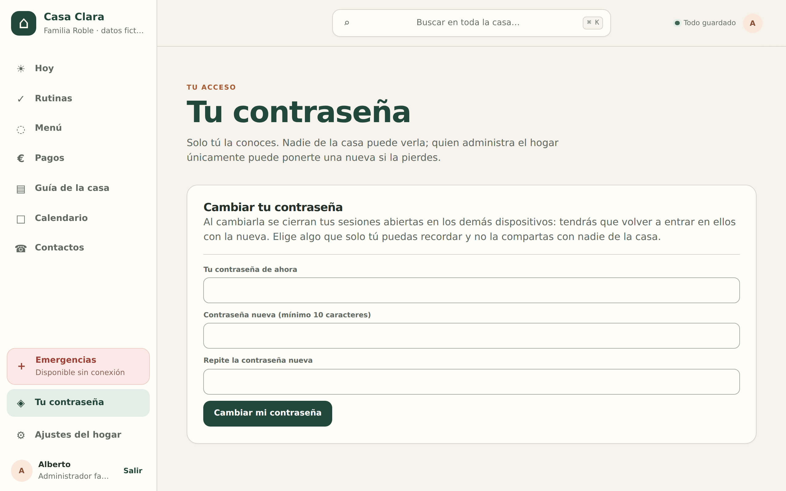
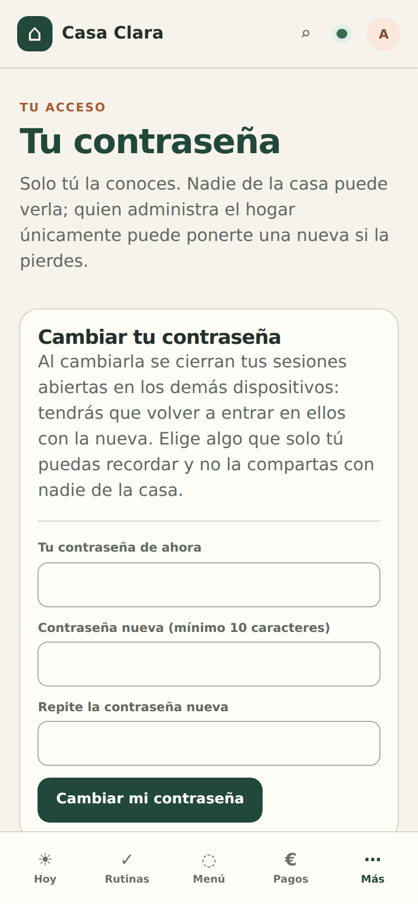
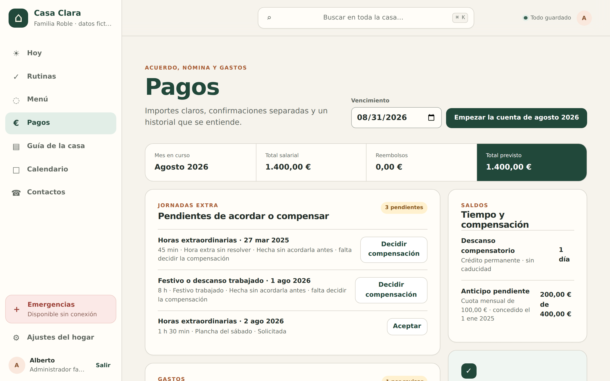
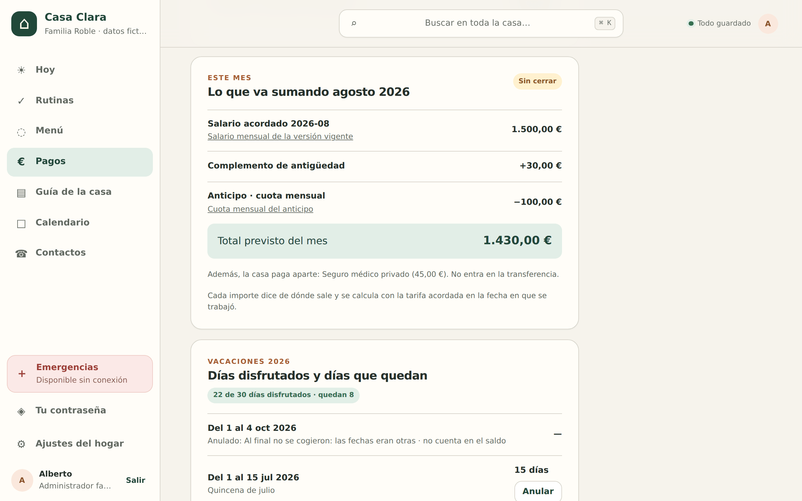
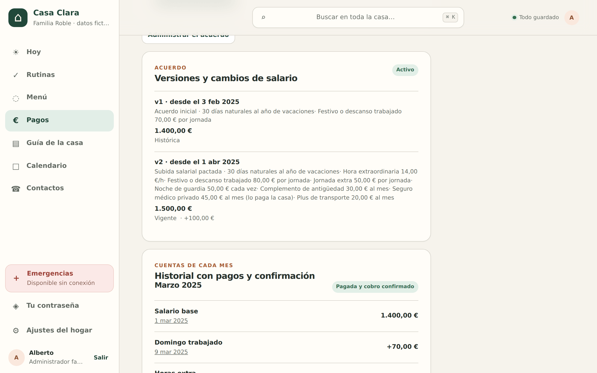
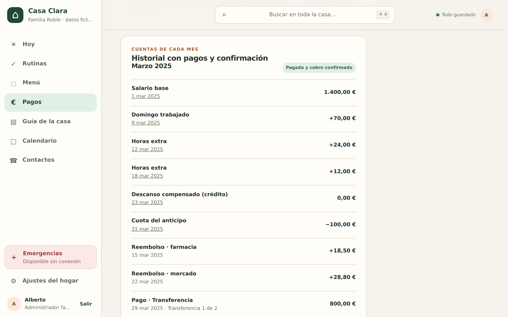
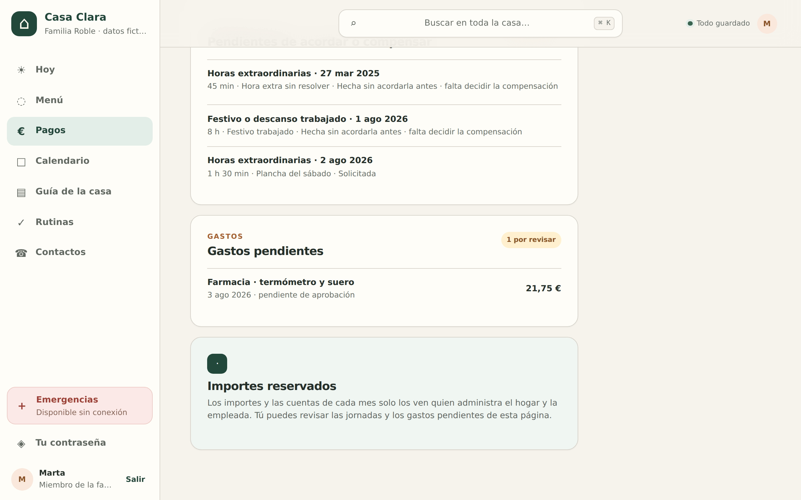

Manual de usuario
Casa Clara, la app de la casa
Casa Clara reúne en un solo sitio el día a día del hogar: lo de hoy, el menú semanal con su lista de la compra, las rutinas, la Guía de la casa (las instrucciones escritas del hogar), el calendario, los contactos y Contrato: el contrato y sus condiciones, la nómina, los gastos y las vacaciones de la empleada de hogar, con las cuentas de cada mes trazables línea a línea.
El principio de la casa
Rapidez y pocos toques: lo habitual se hace con un toque desde la pantalla Hoy. Y todo funciona sin cobertura: los cambios se guardan en tu dispositivo y se envían solos cuando vuelve la conexión.
Cada persona entra con su usuario y su contraseña y ve exactamente lo que le corresponde. Este manual está organizado por esos papeles: Familia Interna Apoyo Acceso puntual
Todas las capturas de este manual proceden de un hogar de demostración con datos inventados; ningún dato es real.
Para empezar
Primeros pasos
Entrar: tu usuario y tu contraseña
Se entra con un nombre de usuario —alberto, ana, marta…— y una contraseña. Nada de correos: en un móvil, teclear tu nombre es mucho más rápido y no hay erratas que valgan. Escribe los dos campos y pulsa Entrar.

Tres cosas que conviene saber desde el primer día
- Nadie se da de alta solo. Las cuentas las crea quien monta el hogar y la contraseña inicial se entrega en persona. No hay registro público.
- No hay «he olvidado mi contraseña» por correo. Es una decisión, no un olvido: se repone cara a cara (más abajo).
- Deja que la guarde el móvil. Los campos están preparados para que el gestor de contraseñas del teléfono la ofrezca y la rellene sola.

Tu contraseña: cambiarla y recuperarla
Cualquiera —familia, interna, apoyo o acceso puntual— tiene su propia pantalla Tu contraseña: en el ordenador, abajo en la barra lateral; en el móvil, dentro de Más. Se escribe la de ahora, la nueva dos veces (mínimo 10 caracteres) y Cambiar mi contraseña.

Al cambiarla se cierran tus sesiones en los demás dispositivos. Es deliberado: si se te quedó abierta en un móvil prestado o alguien llegó a saberla, deja de servir en ese mismo momento.
Larga antes que rara. Tres o cuatro palabras que solo signifiquen algo para ti («la-parra-del-abuelo-2019») valen más que Xk9$m y se recuerdan mejor. Y cada quien la suya: una contraseña compartida no es una contraseña.
Si la olvidas, no hay autoservicio ni correo de recuperación. Se la pides a quien administra la casa y te pone una nueva en un minuto (cómo se hace). Te la dirá en persona; cámbiala tú desde Tu contraseña en cuanto entres.

Qué es un hogar
Todo en Casa Clara vive dentro de un hogar: su menú, sus rutinas, su Guía, sus pagos. Solo ves los hogares a los que te han dado acceso, y cada hogar solo ve lo suyo. Quien administra el hogar decide quién entra, con qué papel y hasta cuándo. La contraseña solo dice quién eres; lo que puedes hacer dentro lo decide tu papel en la casa, que se comprueba en cada pantalla.
Moverse por la app
En pantalla grande, la navegación va en la barra lateral izquierda. En el móvil se convierte en una barra inferior con los cuatro destinos más usados y un botón Más que despliega el resto. El orden se adapta a tu papel: quien trabaja la casa —y también quien la administra— ve Rutinas al frente (Hoy · Rutinas · Menú · Contrato); el miembro de la familia, que no lleva las tareas, ve antes Menú, Contrato y Agenda.
Emergencias siempre a mano. El acceso a Emergencias está fijo en tres sitios: abajo en la barra lateral, al final de la hoja Más del móvil y como botón + Emergencias en la cabecera de Hoy. Esa pantalla queda guardada en el dispositivo y abre incluso sin cobertura.
Arriba está el buscador Buscar en toda la casa… (atajo ⌘ K en el ordenador): encuentra notas de la Guía, contactos y más.
Al final de la barra lateral (y de la hoja Más) está Tu contraseña, que tienen los cinco papeles, y justo debajo tu nombre con Salir.
El punto verde de la esquina superior indica el estado de guardado: Todo guardado cuando no hay nada pendiente, y en ámbar N cambios pendientes cuando hay cambios esperando conexión. Tócalo para ver el detalle.

Sección por papel
Familia · administración Familia
Quien administra el hogar lo ve y lo puede todo: organiza el menú y la compra, crea rutinas, escribe la Guía de la casa, lleva los pagos de la empleada, enlaza los calendarios y gestiona los accesos de las demás personas.
Hoy: el día en una pantalla
Hoy abre con lo importante: el bloque «Necesita tu decisión» (jornadas extra por aceptar o compensar, gastos por aprobar, comidas del menú sin confirmar, cuentas del mes pendientes de pago, rutinas que vencen), el menú del día, las rutinas que vencen hoy y la agenda «Hoy en el calendario».

- Sin salir de Hoy: una jornada extra solicitada se acepta con 1 toque en Aceptar —la fila pasa a «Aceptada ✓»— y una comida se confirma con 1 toque en Confirmar. El botón Revisar de al lado sigue llevando a la pantalla completa cuando quieras ver el detalle.
- Marcar una rutina del día: 1 toque en Marcar hecha; la fila queda tachada con el chip «Hecha ✓ · próxima el …».
- Ver el menú completo: 1 toque en Ver la semana →.

Menú semanal, con las alergias a la vista
Menú organiza la semana en cinco franjas (Desayuno, Almuerzo, Comida, Merienda y Cena) por grupo de comensales. Junto al nombre de cada comensal aparecen sus restricciones alimentarias.

- Asignar un plato: toca Asignar en la franja (o Cambiar si ya hay algo). Se abre el editor con tres pestañas: Receta, Nueva receta y Escribir a mano. Rellena Notas y Raciones si hace falta y pulsa Guardar. Vaciar deja el hueco en «Sin decidir».
- Alergias: si la receta choca con la restricción de algún comensal, la app bloquea el guardado y lista a quién afecta. Solo se desbloquea marcando la casilla Lo sé y aun así quiero apuntarlo.
- Confirmar una comida: 1 toque en Confirmar. Si el contenido del hueco cambia después, la confirmación caduca sola: verás Confirmación caducada: el contenido cambió.
- Repetir semana: elige el lunes de destino en Copiar esta semana al lunes y pulsa Duplicar en la semana siguiente (el botón pasa a decir Duplicar en esa semana si eliges otra fecha).
Una receta nueva desde el propio hueco
No hace falta ir al recetario para estrenar un plato. En el editor del hueco, la pestaña Nueva receta pide solo Nombre de la receta nueva y, si quieres, Ingredientes o nota inicial (opcional). Al pulsar Guardar, la receta se crea en el recetario y queda asignada a ese hueco de una sola vez.

Semanas plantilla: guardar la semana buena y reutilizarla
Cuando una semana funciona, se guarda con nombre y se vuelve a usar cuando quieras. La tarjeta Semanas plantilla vive debajo de los grupos de comensales, en la pestaña Menú semanal.

- Guardar: escribe un nombre en Guardar esta semana como plantilla y pulsa Guardar semana como plantilla.
- Usar: elige una en Usar una plantilla, indica el lunes en Sobre el lunes y pulsa Usar plantilla. La semana de destino debe estar vacía; si tiene comidas, la app lo dice sin tocar nada: «Esa semana ya tiene comidas: elige una semana vacía o quítalas antes.»
- Borrar: Borrar y después Sí, borrar «…». Hacen falta dos toques a propósito.
La lista de la compra se hace sola
La pestaña Lista de la compra junta dos cosas: lo que sale de las recetas del menú (marcado «· del menú», con las cantidades ya escaladas a las raciones) y lo que añadís a mano. Está agrupada por secciones del súper: carnicería, despensa, droguería…

- Marcar lo comprado: 1 toque en su casilla; la línea queda tachada. También las del menú —quien compra necesita marcarlo todo, venga de donde venga.
- Una línea por producto: si un alimento sale del menú y alguien lo apunta a mano, se fusionan en una sola línea con el desglose a la vista: «0,5 l del menú + 2 l añadido». Nada de comprar dos veces lo mismo.
- En paquetes de verdad: cuando el alimento tiene un tamaño de envase declarado, la lista traduce la cantidad a lo que se compra en la tienda: «1,5 kg (2 paquetes de 1 kg)», «0,13 kg (1 paquete de 500 g)». Siempre redondeando hacia arriba.
- Añadir algo: tarjeta Añadir otra cosa → elige un alimento en ¿Qué es? (elige o escríbelo) o escribe el nombre en Escríbelo aquí, pon Cantidad, Unidad y Sección, y pulsa Añadir a la compra.
La sección «Personal»
Debajo de la compra de casa hay una segunda lista, Personal, con el aviso «Solo lo ve la persona interna y quien administra la casa»: es la compra personal de la persona interna, apuntada aparte para poder comprobarla sin mezclarla con la de la casa. Para añadir ahí, en Añadir otra cosa se elige La lista personal en ¿A qué lista? y el botón pasa a Añadir a la lista personal.
El resto de personas del hogar —el miembro de la familia, el apoyo, el acceso puntual— no ven esa lista en absoluto: no es que se les oculte en pantalla, es que la base de datos no les devuelve ni una línea.
Quién come en casa. Los comensales y sus alergias se apuntan en Recetas y comensales (el enlace está junto a las pestañas del menú). El alta es progresiva: basta el Nombre y Apuntar comensal. Las alergias viven en un desplegable opcional, ¿Tiene alergias o restricciones?, que avisa: «Opcional. Si no las tiene, no hace falta abrir esto.»
Rutinas: cada cosa con su próxima fecha
Las rutinas son tareas que se repiten (por días, semanas, meses o trimestres) y cada una dice quién la hace: la familia, la empleada o toda la casa. Sin porcentajes ni históricos de rendimiento: solo qué toca y cuándo.

- Marcar una rutina: 1 toque en Marcar hecha (desde Hoy o desde Rutinas). La próxima fecha se reprograma sola y la fila muestra «Hecha ✓ · próxima el …».
- Crear una rutina: Título, Detalles, ¿Quién la hace? (Toda la casa · Familia · Empleada), la frase Se repite «cada 2 semanas» y Próxima fecha → Crear rutina.
- Cambiar una existente: Editar → Guardar rutina.
Guía de la casa: las instrucciones escritas
La Guía de la casa es la memoria del hogar: cómo va la lavadora, qué hacer si se va la luz, cómo se dobla la ropa, el recetario. Se organiza en apartados con notas, y las más importantes se marcan con Destacar para que salgan en la portada.

Debajo, Apartados muestra el árbol completo con el número de notas de cada uno y el estado de cada nota.

- Escribir algo nuevo: Escribir una instrucción → ¿Sobre qué?, el texto, y ¿Dónde la guardamos? para elegir apartado. El botón principal es Guardar y publicar: publicar es lo normal. Si prefieres dejarla a medias, Guardar sin publicar todavía.
- Cambiar una nota: ábrela y pulsa Editar. Cada guardado crea una versión nueva; el desplegable Cambios anteriores conserva quién cambió qué.
- Publicar un borrador: Publicar desde la propia nota.
- Destacar: Destacar / Quitar de destacados.
Para escribir no hace falta saber nada especial: hay un solo editor, el visual, donde el texto se ve ya con su formato (negritas, listas, títulos).

Las tablas se escriben en Markdown. El editor visual maneja títulos, negritas, listas y citas, pero no tablas: para crear o retocar una, entra en Opciones avanzadas → Escribir en Markdown. Una vez guardadas, las tablas se ven perfectamente en la nota.
Quién ve los borradores. Una nota Guardada sin publicar la ven las personas que pueden escribir en la Guía —la familia y la persona interna—; el apoyo del hogar y el acceso puntual solo ven lo publicado.
Cosas de administración de la Guía
Al final de la portada, quien administra encuentra Mantenimiento de la guía, con tres cosas:
- Búsquedas sin respuesta: lo que se buscó en casa y no encontró nada. Escribir esas notas es lo más útil que puedes hacer.
- Crear un apartado a mano, con nombre y para qué sirve.
- Modelos (avanzado): un apartado puede convertirse en molde con Usar como modelo (avanzado) —pide confirmación, porque el apartado deja de salir en Destacadas— y luego clonarse con Crear apartado desde el modelo. Volver a apartado normal lo deshace.
El manual de convivencia de la casa, ya dentro
La Guía de Casa Roble no está vacía: se ha volcado en ella el manual de convivencia y operaciones del hogar completo — 52 notas repartidas en 7 apartados: La casa y sus zonas, Limpieza, Cocina, Ropa y colada, Los niños, Convivencia y Mantenimiento. Son las instrucciones que antes vivían en un documento que nadie abría, ahora buscables y a un toque desde el móvil.

El manual original venía con huecos marcados como «Pendiente de completar por la familia» (horarios, parámetros de jornada, alergias, programas de lavado…). Esas notas se han guardado sin publicar y hay un índice fijado en la portada que las reúne: Pendientes de completar.

- Abre Pendientes de completar desde las Destacadas de la portada y elige una nota de la lista «Notas con huecos».
- Dentro, los huecos aparecen resaltados como citas: «Pendiente de completar por la familia: …». Pulsa Editar, sustituye cada hueco por el dato real y guarda con Guardar cambios.
- Cuando la nota ya esté completa, pulsa Publicar. Desaparecerá del índice en la siguiente revisión y pasará a verla toda la casa.
La segunda lista del índice, «Pendientes que viven en la app, no en la Guía», recuerda lo que no se arregla escribiendo: los contactos de emergencia se completan en Contactos, las alergias en Recetas y comensales, las recetas y las semanas tipo en el recetario y las Semanas plantilla del menú, y los horarios y la jornada en Contrato.
Contrato: lo pactado, la nómina y los gastos
Contrato reúne todo lo económico de la relación laboral con la empleada: el contrato y sus versiones, las jornadas extra, los gastos, las vacaciones, la cuenta de cada mes y los pagos. Arriba, la tira de resumen: Mes en curso, Total salarial, Reembolsos y Total previsto. Y en medio de la página, dos enlaces que llevan a sus pantallas propias: Administrar el contrato (solo la administración) y Ver mis condiciones (solo la empleada, sobre su contrato).

- Jornada extra solicitada: Aceptar deja constancia del contrato previo. Cuando ya está trabajada, Decidir compensación: eliges Pagarla o Darle descanso, escribes el Motivo y pulsas Confirmar la decisión. La tarifa se congela con la versión del contrato vigente el día que se trabajó.
- Gastos: cada gasto adelantado por la empleada se abre con Revisar y se decide con Aprobar o Rechazar, con su motivo. Los aprobados entran como reembolso en la cuenta del mes; si traían foto, la línea enlaza Ver el justificante.
- La cuenta del mes: Empezar la cuenta de agosto 2026 (eliges antes el Vencimiento), después Cerrar el mes —«al cerrar el mes se calculan las líneas y los importes quedan fijados: ya no cambian aunque cambie el contrato»— y por último Registrar pago (Transferencia, Efectivo, Bizum, Mixto u Otro), con el atajo Pagar todo.

Dinero que se transfiere y dinero que no
Los complementos pactados son de dos clases y la cuenta del mes no los mezcla: los que suman al pago (una antigüedad, un plus) entran como una línea más del total; los que paga la casa aparte (un seguro médico, por ejemplo) constan como condición de la empleada pero se cuentan debajo del total, porque meterlos dentro haría que la cuenta mintiera sobre lo que se transfiere.


Confirmación independiente
Registrar una transferencia no confirma por sí solo que la otra parte la haya recibido: el cobro lo confirma la empleada por separado. Las dos huellas quedan registradas.
Condiciones del contrato: lo que se pacta, y cómo se cambia
Desde Contrato → Administrar el contrato se da de alta y se edita lo pactado con la empleada. Es la pantalla donde vive el salario, la jornada, los días de vacaciones y —lo más importante— qué trabajo de más admite este contrato y a cuánto se paga cada cosa. Su subtítulo lo resume: «Cada cambio crea una versión nueva. Lo ya pactado no se reescribe nunca.»
![Pantalla Condiciones del contrato con el contrato de Ana desde el 3 feb 2025 marcado como Activo: la v2 vigente de 1.500 euros resumiendo su catálogo (Hora extraordinaria desactivado · no lo ve, Festivo o descanso trabajado 80 euros por jornada, Jornada extra 50 euros por jornada, Noche de guardia 50 euros cada vez, Acompañamiento a médico sin tarifa · no la ve, Complemento de antigüedad 30 euros al mes que suma al pago, Seguro médico privado 45 euros al mes que paga la casa, Plus de transporte retirado), la v1 histórica de 1.400 euros, el botón Cambiar las condiciones y la tarjeta Nuevo contrato.](capturas/familia-acuerdo.png)
Dar de alta el contrato
Si el hogar todavía no tiene contrato con esa persona, Nuevo contrato → Dar de alta un contrato pide la Empleada, la fecha en que El contrato empieza, desde cuándo rige La primera versión, el Salario mensual, la Jornada semanal (minutos), las Vacaciones al año (días naturales) y un Motivo. Debajo, los mismos catálogos que se explican aquí. Cuando ya hay un contrato activo para todo el mundo, la tarjeta lo dice: «No hay ninguna empleada interna sin contrato activo.»
Tipos de trabajo extra
El catálogo es lo que se puede pedir y cobrar de más. Cada fila tiene:
- Código y Nombre: el nombre es lo que verá la casa («Jornada extra», «Noche de guardia»).
- Se paga: Por hora, Por jornada o Importe fijo por supuesto.
- Tarifa: el precio. Dejarla vacía es un dato legítimo: un concepto puede quedar pactado sin precio, y entonces la empleada no lo ve.
- Duración de la jornada (minutos), para lo que no se paga por hora: cuánto dura «una jornada» a estos efectos.
- Se lo permito: la casilla que activa o desactiva ese concepto.
![Formulario Versión nueva con el bloque Trabajo extra y el aviso «Lo que esté desactivado o sin tarifa no lo verá la empleada, ni en sus condiciones ni al registrar trabajo»: la fila overtime (Hora extraordinaria, Por hora, 14,00) con la casilla Se lo permito sin marcar, y las filas worked_rest_day (80,00 por jornada, 1440 minutos), jornada_extra (50,00 por jornada, 600 minutos), noche_de_guardia (Importe fijo, 50,00) y sin_tarifa (Acompañamiento a médico, Importe fijo, sin tarifa), todas marcadas.](capturas/familia-acuerdo-version.png)
Lo que no se le permite, no lo ve
El propio formulario lo advierte: «Lo que esté desactivado o sin tarifa no lo verá la empleada, ni en sus condiciones ni al registrar trabajo.» Si el contrato dice que no hay horas sueltas, en su móvil no aparece el precio por hora en ninguna parte: ni en sus condiciones, ni en el desplegable de registrar una jornada extra. No es que se esconda un botón; es que ese dato no llega a su dispositivo.
Complementos recurrentes
Lo que se repite todos los meses. Además del Código, el Nombre, el Importe al mes y las fechas opcionales Desde y Hasta, la clave está en Quién lo cobra:
- Suma a su transferencia — es dinero para ella y entra como una línea más en la cuenta del mes.
- Lo paga la casa aparte — «consta en sus condiciones pero NO entra en la transferencia del mes». Es el caso típico de un seguro médico contratado por la familia.
La casilla Vigente retira un complemento sin borrarlo: deja de aplicarse a partir de la versión nueva, y lo anterior sigue como estaba.

El horario
El horario también se pacta aquí, y también por versiones. La casilla Este contrato declara horario es la primera decisión: sin marcar no se guarda ningún horario y a la empleada no se le enseña ninguna sección de horario —ni vacía, ni con guiones—.
Marcada, se describe la jornada tipo: Entra a las, Sale a las y el Descanso al mediodía (minutos), más una nota opcional. Y debajo, una tabla con los siete días donde cada uno responde a una sola pregunta:
- Como la jornada de arriba — no se guarda nada para ese día. Es lo normal, y por eso es lo que viene por defecto.
- Horario distinto — se rellena solo lo que cambia. Para terminar antes un día basta con su hora de Sale: no hay que repetir la entrada ni el descanso.
- Libra — ese día no se trabaja.
Si el horario no cuadra con la jornada, la app lo canta
El horario y la Jornada semanal (minutos) son dos condiciones del mismo contrato y pueden contradecirse. Mientras escribes, la pantalla suma las horas del horario y las compara: «Este horario suma 40 h 30 min a la semana y la jornada contratada dice 40 h: sobran 30 min.»
No te impide guardar. Casa Clara no sabe cuál de las dos condiciones está mal —eso lo sabéis vosotros— y prefiere que lo veas a decidir por su cuenta. Lo que no hace es callárselo: el aviso también aparece en la pantalla de la empleada.
Ojo con una consecuencia del modelo por versiones: apilar una versión nueva sin horario se lo retira a partir de esa fecha. Por eso el formulario aparece siempre con el horario vigente ya escrito, para que quitarlo sea una decisión y no un despiste.
Cambiar lo pactado crea una versión, nunca corrige la anterior
- Pulsa Cambiar las condiciones. El formulario aparece relleno con lo que rige hoy: no se parte de cero.
- Cambia lo que haga falta —salario, jornada, horario, vacaciones, tarifas, complementos— y pon la fecha en Entra en vigor el.
- Escribe el Motivo del cambio. Es obligatorio: dentro de un año, ese texto es lo que explicará por qué subió el sueldo.
- Guardar como versión nueva. La app confirma: «Versión nueva añadida. La anterior sigue en el historial.»
Lo anterior sigue valiendo para todo lo trabajado antes. Una jornada extra de marzo se seguirá pagando con la tarifa de marzo aunque el catálogo cambie en abril: las tarifas se congelan con la versión vigente el día que se trabajó. Y lo que se borre de un catálogo deja de existir a partir de esa fecha, no antes.
Vacaciones: derecho, días disfrutados y saldo
El derecho anual —cuántos días naturales de vacaciones al año— forma parte de las condiciones del contrato, igual que el salario: se pone al dar de alta el contrato y cambiarlo exige una versión nueva. Los días disfrutados los apunta la familia en Contrato, en la tarjeta Días disfrutados y días que quedan.

- Apuntar: Primer día, Último día y una Nota (opcional) («Quincena de agosto», «Puente de mayo») → Apuntar vacaciones.
- Se cuentan días naturales, festivos y fines de semana incluidos: del 1 al 15 son 15 días, y la propia pantalla lo dice para que no haya sorpresas.
- Anular, no borrar: si te equivocaste de fechas, Anular pide un motivo («Por qué se anula») y el periodo se queda en la lista tachado, con quién lo anuló y por qué. «El periodo no se borra.»
El primer año y el último se prorratean
Si el contrato empezó a mitad de año, el derecho de ese año no es el completo sino la parte proporcional, y la tarjeta lo explica en una línea debajo del saldo. Lo mismo el año en que el contrato termina. El 1 de enero el contador vuelve a empezar.
Si se pasan los días, se ve; no se rechaza
Cuando lo apuntado supera el derecho del año, Casa Clara no bloquea el registro: enseña el saldo en negativo con un aviso —«Se han apuntado más días de los que reconoce el contrato. Casa Clara no lo corrige sola: lo enseña para que lo habléis y decidáis qué hacer»—. Un día de más puede estar pactado de palabra; el programa no es quién para negarlo.
Conceptos a mano: lo que no sale de ningún hecho
Hay importes que no vienen de una jornada, ni de un gasto, ni del acuerdo: una gratificación que se decide en una conversación, un descuento hablado, la parte proporcional de algo, un anticipo que se devolvió en efectivo. Para eso está la tarjeta Importes sueltos imputados al mes que toque, en Pagos. Se apunta el importe con su motivo y eligiendo en qué mes cuenta.
- Cómo se llama en la cuenta: el título de la línea («Gratificación de verano», «Descuento acordado»). Es lo que se leerá en el recibo dentro de un año.
- Importe (€) siempre en positivo, y al lado Suma o resta. El signo se elige, no se teclea.
- Mes en el que cuenta: el mes en curso es lo normal, pero puede ser otro. Es la respuesta a «que se contabilice el mes que toque».
- Dinero que recibe ella: Sí cambia la transferencia del mes; No deja constancia sin tocarla.
- Por qué: obligatorio. Un importe suelto sin explicación es lo que convierte una cuenta en una discusión.
Sumar no es transferir
El ejemplo que lo explica: Ana devolvió en mano los 200 € de un anticipo. Conviene que conste, pero descontarlos otra vez de la transferencia sería cobrárselos dos veces. Con Dinero que recibe ella: No el concepto aparece en la cuenta del mes —«También consta, sin cambiar la transferencia»— y ningún total lo toca. Es la misma distinción que ya hacen los complementos que paga la casa por su cuenta.
Una cuenta cerrada no se reescribe
Si el mes que eliges ya está cerrado, Casa Clara no rechaza el apunte ni rehace aquella cuenta: lo imputa al primer mes abierto siguiente y la fila lo dice con todas las letras —«Se pidió para marzo de 2026, pero esa cuenta ya estaba cerrada: se imputa a abril de 2026»—. El recibo de marzo ya se generó y pudo estar pagado; un número que cambia después de haberse enseñado es justo lo que destruye la confianza en una cuenta.
Anular, no borrar
Un concepto mal apuntado se Anular con su motivo y se queda en la lista, con quién lo anuló y por qué, sin contar en ningún total. Lo que ya entró en una cuenta cerrada no se puede anular: para corregirlo se apunta el concepto contrario en un mes abierto, y la aplicación lo dice así cuando lo intentas.
Los conceptos los apunta y los anula quien administra. La empleada los ve todos —en la lista y en la cuenta de su mes, con su etiqueta y su motivo—, incluidos los que solo constan. Enterarse de que se ha decidido algo sobre su dinero no es un detalle: es el motivo por el que esto existe.
Calendario: enlazar los calendarios de verdad
Calendario muestra los próximos 30 días del hogar con los eventos de los calendarios que la familia haya enlazado: el del cole, el del trabajo, el de las actividades. No es una agenda que haya que rellenar a mano: se lee de los calendarios que ya usáis.

Enlazar uno es cosa de la administración y son dos campos:

- Pulsa Enlazar un calendario.
- ¿De quién es este calendario?: un nombre que se entienda («Cole de los niños», «Trabajo de Marta»). Es lo que verá toda la casa junto a cada evento.
- Enlace del calendario: en Google Calendar o en el Calendario de Apple, compartir → «dirección iCal» o «enlace ICS». Pega ese enlace y pulsa Enlazar el calendario.
Más abajo, Calendarios enlazados lista los que hay con su estado en lenguaje llano («Al día (leído el …)», «No se pudo leer la última vez», «En pausa: no se muestra»), y permite Editar o Dejar de mostrarlo. Quitar uno deja de mostrar sus eventos en toda la casa, y puedes volver a activarlo cuando quieras.
Ajustes del hogar: accesos y traspaso
La pregunta que encabeza la pantalla lo resume: «¿Hasta cuándo puede entrar cada persona?». Cada miembro aparece con su papel, desde cuándo está en el hogar y un chip de estado (Activo, Con fecha límite, Fecha límite pasada, Sin acceso). El tuyo va marcado como Tu acceso y no puedes quitártelo a ti mismo.

- Acceso temporal: elige fecha y hora en Fecha límite del acceso y pulsa Poner fecha límite (ideal para canguros o ayudas puntuales). Quitar la fecha límite lo vuelve indefinido. Cuando pasa la fecha, la puerta se cierra sola.
- Quitar un acceso: Quitar el acceso abre la confirmación, que avisa de que «es inmediato y no se puede deshacer desde esta pantalla» y que la persona dejará de entrar «también en los dispositivos donde ya tenga la sesión abierta». Hay que escribir QUITAR en el campo Confirmación y rematar con Quitar el acceso ahora.
Reponer la contraseña de otra persona
Es la única red de recuperación que hay, y está aquí: en la tarjeta de esa persona, Poner una contraseña nueva. Solo puede hacerlo quien administra el hogar, y no puede reponer la suya propia (para eso está Tu contraseña) ni la de alguien a quien ya se le retiró el acceso.

- Pulsa Poner una contraseña nueva en la tarjeta de esa persona.
- Escribe la contraseña nueva dos veces (mínimo 10 caracteres) y la palabra REPONER en Confirmación.
- Poner la contraseña nueva. Todas sus sesiones se cierran: si tenía la app abierta en el móvil, se le pedirá entrar de nuevo. Es exactamente lo que se quiere al reponer una contraseña.
- Díctasela en persona y pídele que la cambie desde Tu contraseña en cuanto entre. Nada de WhatsApp, correo ni una nota en la nevera.
Dos personas que administren, siempre
Si solo hay una y pierde su contraseña, no queda nadie que se la reponga: no hay recuperación por correo ni contraseña maestra, y eso es deliberado (una puerta trasera para vosotros lo es para cualquiera). Tener dos cuentas con papel de administración no es una comodidad: es la red de seguridad de la casa. Se reponen la contraseña mutuamente en un minuto.
Traspaso operativo de la casa
Si la casa cambia de manos, llega una sustitución o alguien se va de vacaciones, Traspaso operativo de la casa genera «todo lo necesario para que otra persona lleve la casa, en un único archivo comprimido». Hay dos versiones, y la app explica cada una:
- Descargar traspaso (apoyo) — «Incluye la guía publicada, las rutinas de toda la casa, el menú de la semana y los contactos.»
- Descargar traspaso (familia) — «Lo mismo, con todas las rutinas (también las de la familia).»
En los dos casos, y la propia pantalla lo dice: lo de Contrato no se incluye nunca. El ZIP viene con una huella de verificación por fichero, para saber que llegó entero.
Contactos y Emergencias
El directorio agrupa personas y servicios por tipo (salud, casa y vecinos, servicios y averías…). Con Añadir contacto rellenas nombre, teléfono y tipo; la casilla «Destacado: visible en Emergencias y sin conexión» decide cuáles aparecen en la pantalla de Emergencias. Cada tarjeta tiene Llamar (1 toque), Editar y Archivar.
Emergencias es deliberadamente simple: el 112 arriba con su botón Llamar al 112, los contactos destacados debajo y un botón Imprimir para dejar una copia en papel, por ejemplo en la nevera. La pantalla queda guardada en cada dispositivo y abre sin conexión.


Sección por papel
Familia · miembro Familia
Un miembro de la familia (por ejemplo, la pareja de quien administra) maneja el día a día exactamente igual: organiza el menú y confirma comidas, lleva la compra, marca y consulta rutinas, escribe y publica en la Guía de la casa, gestiona contactos y usa el calendario y el buscador.
Lo que queda reservado a la administración:
- No ve Ajustes del hogar: no pone fechas límite, no quita accesos y no repone la contraseña de nadie.
- No ve la lista Personal de la compra: esa es de la persona interna y de quien administra.
- No enlaza calendarios (los ve, pero no los gestiona).
- En Contrato puede revisar las jornadas extra y los gastos pendientes, pero sin ningún importe y sin botones de decisión: no acepta jornadas, no aprueba gastos, no cierra el mes ni registra pagos.
- No entra en Condiciones del contrato ni ve el saldo de vacaciones: eso es de la administración y de la propia empleada.
Sí tiene, como todo el mundo, su pantalla Tu contraseña para cambiar la suya.

Sección por papel
Interna / empleada de hogar Interna
Ana trabaja y vive en la casa, así que su Casa Clara está pensada para el móvil y para el mínimo de toques: su día en Hoy, el menú, la compra —con su lista Personal—, la Guía de la casa y Contrato, donde ve lo suyo completo, con los mismos importes que ve quien administra. Tiene además, como todo el mundo, Tu contraseña dentro de Más.
Su día en Hoy
Al abrir la app, Hoy le muestra sus rutinas del día en «Necesita tu decisión» y el menú con lo que toca cocinar.
- Marcar una rutina: 1 toque en Marcar hecha. Queda tachada al instante con «Hecha ✓ · próxima el …», aunque no haya cobertura.
- El menú del día indica con chips qué está Confirmado y qué sigue Sin confirmar. La confirmación del menú la hace la familia; si algo aparece sin confirmar a la hora de cocinar, pregunta antes.
- Emergencias: siempre a un toque con el botón + Emergencias.

Jornadas extra, gastos y compensaciones
- Registrar una jornada extra: Tipo, Fecha y Nota (opcional) → Registrar jornada extra. Queda «Solicitada» a la espera de la familia. El desplegable Tipo solo ofrece lo que su contrato permite y tiene tarifa: si no hay horas sueltas pactadas, ahí no aparecen. Cuando el concepto se paga por jornada, la app dice cuánto dura esa jornada «según lo pactado» y no hay que teclear horas.
- Cuando la haces: si la jornada ya estaba aceptada, márcala con Marcar realizada.
- Gastos adelantados: Añadir gasto con Fecha, Importe (€), Descripción y Foto del justificante (opcional). Aprobado, vuelve como reembolso en la cuenta del mes.
- Compensaciones de descanso: cuando una jornada se decide «con descanso», se apunta como crédito a tu favor. Ese crédito es permanente: nunca caduca; en Saldos aparece como «Crédito permanente · sin caducidad».
- Conceptos apuntados a mano: gratificaciones, descuentos acordados o partes proporcionales que la familia imputa a un mes concreto. Los ves en la tarjeta Importes sueltos imputados al mes que toque y en la cuenta de su mes, con su motivo. Los que dicen «Consta, no se transfiere» son cosas que quedan por escrito sin mover el pago —por ejemplo, un anticipo que ya devolviste en mano—.
- Cobros: cuando la familia paga la cuenta del mes, confirmas tú con Confirmar cobro. Tu confirmación queda registrada aparte del pago.
- Tu copia: Descargar mi expediente (PDF + CSV) te da un ZIP con las cuentas de cada mes —con todos sus conceptos, los que suman y los que restan—, pagos, jornadas, gastos y saldos. Es tuyo y te lo llevas cuando quieras.
La foto del tique, aunque no haya cobertura
Si estás en la farmacia sin señal, haz la foto igual: la app lo dice expresamente —«Sin conexión: haz la foto igualmente. Se guarda en este dispositivo y se une al gasto en cuanto vuelva la red»—. El gasto queda con el chip Guardado aquí · La foto se unirá al gasto con conexión y, cuando vuelve la cobertura, la foto se engancha sola a su gasto: pasa a Enviado · Justificante adjunto ✓ sin que tengas que volver a hacer nada.

Mis condiciones: lo que está pactado, en plata
Desde Contrato → Ver mis condiciones, Ana tiene su contrato explicado en lenguaje llano: «Lo que está pactado ahora mismo, tal y como se aplica a tu pago.» Arriba, Lo básico —salario al mes, jornada y vacaciones al año— con la versión y la fecha desde la que rige.


Solo lo que le aplica llega hasta aquí
La lista no está filtrada en la pantalla: lo que no le aplica no sale siquiera de la base de datos. Un concepto desactivado, o pactado sin tarifa, no aparece ni en sus condiciones ni al registrar trabajo. Y si el contrato no contempla ningún trabajo extra, la app lo dice en vez de callarse: «Tu contrato no contempla trabajo extra por ahora.»
Tu jornada: el horario, en una frase
En la misma pantalla, la tarjeta Tu jornada dice el horario pactado como lo diría una persona: «De 8:00 a 16:30, con hora y media de descanso al mediodía. Sábado hasta las 14:30. Domingo libre.» Debajo, los siete días uno a uno con sus horas y las que suma cada uno, por si quiere comprobarlo.
El horario es una condición del contrato como el salario: cambiarlo crea una versión nueva y la anterior queda en el historial. Si las horas del horario no cuadran con la jornada semanal que dice el contrato, la app lo escribe en esa misma tarjeta en vez de callárselo, y le dice con quién hablarlo.
Si no hay horario pactado, no hay tarjeta
Hay contratos que no declaran horario. En ese caso Ana no ve una sección vacía ni una fila de guiones: sencillamente no hay tarjeta Tu jornada. Un hueco con guiones parece una avería o un descuido; la ausencia limpia es la respuesta honesta.
Sus vacaciones
En Contrato, la tarjeta Días disfrutados y días que quedan le enseña el saldo del año en curso y los periodos apuntados, con los anulados a la vista y su motivo.
Ana mira, pero no escribe: los días los apunta la familia. No verá el formulario Apuntar vacaciones ni los botones Anular. Si el saldo no le cuadra, es una conversación, no un formulario.

Menú y compra
Ana consulta el menú de la semana con las restricciones de cada comensal a la vista, y en la Lista de la compra puede añadir lo que falta y marcar (1 toque) lo comprado, también las líneas que vienen del menú. Cada línea dice la cantidad, los paquetes que hay que comprar y de dónde sale («· del menú», «0,5 l del menú + 2 l añadido»).
Debajo tiene su propia lista, Personal, para la compra que es suya: solo la ven ella y quien administra la casa. Para apuntar ahí, en Añadir otra cosa se elige La lista personal y el botón pasa a Añadir a la lista personal.
Emergencias, siempre
La pantalla de Emergencias con el 112 y los contactos destacados funciona también sin cobertura, y en el móvil vive dentro de Más además del botón fijo en Hoy.


Sección por papel
Apoyo del hogar y acceso puntual Apoyo Acceso puntual
Apoyo del hogar
El papel de apoyo (una ayuda externa que viene algunas horas, como Lucía) ve lo necesario para trabajar en la casa, sin nada económico:
- Hoy y las Rutinas que le tocan, que puede marcar con Marcar hecha.
- El Menú y la lista de la compra, en modo consulta.
- La Guía de la casa (solo lo publicado) y el buscador.
- Contactos y Emergencias.
No ve Contrato, ni el Calendario, ni los ajustes: esas secciones ni siquiera aparecen en su menú. Su propia pantalla Hoy se lo dice sin rodeos: «Tu acceso incluye el menú, las rutinas, los contactos, la guía de la casa y las emergencias. El resto de la casa lo lleva la familia.»
Y si llega por un enlace a una sección que no le toca, no se encuentra un error técnico ni una pantalla en blanco:

Acceso puntual (visor)
El acceso puntual (un canguro una noche, como Diego) es de solo consulta: Hoy como resumen del día —sin poder marcar nada; la propia pantalla lo dice: «Tu acceso permite consultar el día, pero no marcar rutinas»—, el Calendario (para saber a qué hora hay que recoger a quién), los Contactos y Emergencias. No ve el menú, ni las rutinas, ni la Guía.
Ojo con esta pareja: el acceso puntual sí ve el Calendario y el apoyo no. Es deliberado: a un canguro lo que le hace falta es la agenda del día; a quien viene a trabajar unas horas, las tareas y las instrucciones.
Para estos papeles conviene poner una fecha límite del acceso en Ajustes: cuando pasa la fecha, la puerta se cierra sola.
| Sección | Familia admin. | Familia miembro | Interna | Apoyo | Puntual |
|---|---|---|---|---|---|
| Hoy y rutinas | Todo | Todo | Marca las suyas | Marca las suyas | Solo consulta |
| Menú | Edita y confirma | Edita y confirma | Consulta | Consulta | — |
| Lista de la compra | Añade y marca | Añade y marca | Añade y marca | Consulta | — |
| Lista «Personal» | Sí | — | Sí (es la suya) | — | — |
| Guía de la casa | Escribe y publica | Escribe y publica | Escribe; ve lo no publicado | Lee lo publicado | — |
| Contrato | Decide todo | Jornadas y gastos, sin importes | Lo suyo, completo | — | — |
| Condiciones del contrato | Crea y cambia (versión nueva) | — | Ve las suyas, sin lo que no le aplica | — | — |
| Vacaciones | Apunta, anula y ve el saldo | — | Ve su saldo y sus periodos | — | — |
| Calendario | Enlaza y ve | Ve | Ve | — | Ve |
| Contactos | Edita | Edita | Consulta | Consulta | Consulta |
| Emergencias | Sí | Sí | Sí | Sí | Sí |
| Tu contraseña | Sí | Sí | Sí | Sí | Sí |
| Ajustes del hogar | Sí (y repone contraseñas) | — | — | — | — |
Conceptos
Cómo funciona, en lenguaje llano
Funciona sin cobertura
Cuando marcas, asignas o registras algo, la app responde al instante y guarda el cambio en tu dispositivo. Si hay conexión, lo envía en el acto; si no, lo envía solo cuando la conexión vuelve. Nunca esperas a la red.
- La nota de guardado te dice siempre la verdad, con el mismo lenguaje en toda la app: en verde Guardado ✓ cuando el cambio está confirmado, en ámbar «Guardado en este dispositivo; se enviará al recuperar la conexión» cuando espera red, y en rojo «No se pudo guardar: …» si el servidor lo rechazó, con la causa.
- El punto de estado de la esquina resume lo global: «Todo guardado», «N cambios pendientes», «Sincronizando…», «Sin conexión» o «Necesita tu decisión». Sin conexión, un aviso recuerda que «el contenido crítico guardado sigue disponible».
- Emergencias se guarda por adelantado en cada dispositivo: abre aunque nunca la hayas visitado y no haya cobertura.
Qué llevas encima cuando no hay red
El paquete que se guarda en tu dispositivo ya no es una maqueta: lleva datos reales del hogar, los que hacen falta para seguir funcionando una tarde sin cobertura. En la pantalla sin conexión encontrarás:
- Emergencias: el 112 y los contactos destacados del hogar.
- «El día de hoy»: Qué se come —el menú real de hoy, indicando lo que está «Sin confirmar»— y Tareas que tocan hoy, con las rutinas que vencen.
- «Instrucciones guardadas»: el texto completo de las notas destacadas de la Guía. Cómo va la caldera se lee igual sin datos.
Y se puede escribir sin red: incluso la primerísima instrucción de una Guía vacía. La app avisa de que «se guardará en el apartado «General», que se crea solo. Funciona también sin conexión», y al recuperar la cobertura el apartado y la nota entran juntos, sin pasos raros.
Y si algo no puede entrar: el triaje
Si un cambio guardado en el dispositivo llega tarde y choca con otro más reciente (o el servidor lo rechaza), no se pierde ni se pisa nada en silencio: aparece la tarjeta «Cambios sin guardar · Revisión necesaria» en Hoy (en Contrato se llama «Pendientes de tu decisión»), con cada cambio y dos salidas: Reintentar o Descartar (descartar solo lo elimina de tu dispositivo). La app nunca dice «se sincronizará» de algo que en realidad fue rechazado.
Lo de Contrato es un libro contable
Todo lo laboral —jornadas, gastos, cuentas del mes, pagos— se anota, no se borra. Las correcciones se registran como nuevas anotaciones, igual que en un libro de cuentas: por eso el historial siempre cuadra y cualquier línea de una cuenta puede rastrearse hasta el hecho y la versión del contrato que la originaron. Los cambios de salario crean una versión nueva del contrato con su fecha; las tarifas de cada jornada se congelan al decidir su compensación, aunque el salario cambie después.
Lo mismo vale para las condiciones enteras, no solo para el sueldo: el catálogo de trabajo extra, sus tarifas y los complementos viajan dentro de la versión. Cambiar cualquiera de ellos apila una versión nueva con su motivo y su autoría, y las anteriores no se tocan nunca. Los periodos de vacaciones siguen la misma regla: se anulan con un motivo, no se borran.
Privacidad
- Cada hogar, lo suyo. La separación entre hogares está garantizada en la propia base de datos, no solo en la pantalla.
- Cada papel, lo justo. Los importes, por ejemplo, solo los ven la administración y la propia empleada; y la lista «Personal» de la compra, solo la persona interna y quien administra. No es que se oculten botones: es que la base de datos no devuelve esos datos a quien no le corresponden.
- Y dentro del contrato, solo lo pactado. Del catálogo de condiciones, a la empleada le llega únicamente lo que su contrato le permite y tiene tarifa. Una tarifa desactivada no está escondida en su móvil: no llega a él.
- Tu contraseña es tuya. Nadie de la casa puede verla, tampoco quien administra: lo único que puede hacer es ponerte otra, y al hacerlo se cierran todas tus sesiones. Casa Clara no envía correos a nadie en ningún momento.
- Calendarios enlazados, no copiados. Casa Clara lee los calendarios que la familia enlaza y guarda solo los eventos de una ventana corta alrededor de hoy. Dejar de mostrar un calendario borra sus eventos de la casa, y quitarlo del todo se los lleva con él.
- Demostraciones siempre sintéticas. Los entornos de prueba avisan («Entorno sintético: no introduzcas datos reales») y no admiten datos de personas reales.
Dudas rápidas
Preguntas frecuentes
- ¿Y si marco una rutina por error?
-
No hay botón de deshacer: al marcarla, la próxima fecha se reprograma según su frecuencia. Si era importante hacerla hoy de verdad, avisa a la familia para que ajuste la «próxima fecha» editando la rutina (Editar → Guardar rutina).
- He olvidado mi contraseña.
-
No hay «he olvidado mi contraseña» por correo, y no es un olvido de la app: Casa Clara no manda correos a nadie. Pídesela a quien administra la casa: entra en Ajustes del hogar → tu tarjeta → Poner una contraseña nueva y te la dice en persona. Cámbiala tú desde Tu contraseña en cuanto entres.
Por eso conviene que haya dos personas con papel de administración: si solo hay una y es justo la que la pierde, no queda nadie dentro que pueda reponerla.
- ¿Puede alguien ver mi contraseña?
-
No. Nadie de la casa, tampoco quien administra. Lo único que puede hacer es ponerte una nueva, y eso deja rastro evidente: se cierran todas tus sesiones y tendrás que volver a entrar. Si te pasa sin haberlo pedido, pregunta.
- Cambié mi contraseña y se me ha cerrado la sesión del otro móvil.
-
Es lo previsto. Al cambiar la contraseña —o al reponértela quien administra— se cierran las sesiones abiertas en los demás dispositivos. Entra otra vez en ellos con la nueva.
- ¿Qué pasa si me quedo sin internet a mitad de faena?
-
Nada que debas hacer tú: sigue marcando y registrando con normalidad. Verás el aviso «Sin conexión» y la nota ámbar de «guardado en este dispositivo»; cuando vuelva la cobertura, los cambios se envían solos y la nota pasa a verde. Emergencias sigue abriendo siempre.
- ¿Pueden pisarse los cambios si dos personas tocan lo mismo?
-
No en silencio. Si tu cambio llega cuando ya existe otro más reciente, entra en «Revisión necesaria»: miras la pantalla actual y decides Reintentar o Descartar. Con las confirmaciones del menú pasa igual: si el plato cambió después de confirmarse, la confirmación caduca sola y se pide de nuevo.
- Hay que subirle el sueldo. ¿Dónde se cambia?
-
En Contrato → Administrar el contrato → Cambiar las condiciones. El formulario ya viene relleno con lo que rige hoy: cambias el importe, pones la fecha en Entra en vigor el, escribes el motivo y pulsas Guardar como versión nueva. La versión anterior no se toca: todo lo trabajado antes se sigue pagando como estaba pactado entonces.
- En mis condiciones no aparece el precio por hora. ¿Falta un dato?
-
No: es que ese concepto no está pactado en tu contrato, o está pactado sin tarifa. Casa Clara solo enseña lo que te aplica y tiene precio, para que nadie cuente con un cobro que no existe. Si crees que debería estar, es una conversación con la familia: se añade desde Administrar el contrato y nace como versión nueva.
- Nos hemos pasado de días de vacaciones. ¿Qué hace la app?
-
Enseñarlo, no impedirlo. El saldo aparece en negativo con el aviso de que «se han apuntado más días de los que reconoce el contrato… lo enseña para que lo habléis y decidáis qué hacer». Un día de más puede estar acordado de palabra; el programa no lo corrige por su cuenta.
- Apunté unas vacaciones con las fechas mal. ¿Se borran?
-
No se borran: se anulan. Pulsa Anular, escribe por qué y apunta el periodo bueno. El anulado se queda en la lista, con su motivo y sin contar en el saldo, para que dentro de seis meses se entienda qué pasó.
- ¿Caducan las compensaciones de descanso?
-
No. Nunca. Cada descanso acordado queda como «Crédito permanente · sin caducidad» en los saldos de Contrato, y ahí sigue hasta que se disfruta.
- ¿Puedo borrar la cuenta de un mes o corregir un pago equivocado?
-
Borrar, no: es un registro que no se tacha. Lo que se hace es anotar la corrección (por ejemplo, el ajuste correspondiente en la cuenta del mes siguiente), de modo que quede rastro de las dos cosas.
- ¿Cómo me llevo mis datos?
-
La empleada descarga su historial completo con Descargar mi expediente (PDF + CSV). La familia genera desde Ajustes el traspaso operativo de la casa (la Guía publicada, rutinas, menú de la semana y contactos) con Descargar traspaso; ese paquete nunca incluye nada de Contrato.
- He guardado una nota de la Guía y no la ve la persona interna. ¿Por qué?
-
Probablemente la guardaste con Guardar sin publicar todavía: llevará el chip Guardada sin publicar. Ábrela y pulsa Publicar. Las notas sin publicar las ven quienes pueden escribir en la Guía (la familia y la persona interna), pero nunca el apoyo del hogar ni un acceso puntual.
- Quiero poner una tabla en una nota de la Guía y no me deja.
-
El editor visual maneja títulos, negritas, listas y citas, pero no tablas. Entra en Opciones avanzadas → Escribir en Markdown y escríbela ahí con barras verticales. Al guardar se ve como una tabla de verdad.
- He guardado una semana como plantilla y al usarla no pasa nada.
-
Una plantilla solo se copia sobre una semana vacía. Si la de destino ya tiene comidas, la app no toca nada y te lo dice: «Esa semana ya tiene comidas: elige una semana vacía o quítalas antes.» Vacía esos huecos o elige otro lunes en Sobre el lunes.
- Hice la foto de un tique sin cobertura. ¿La he perdido?
-
No. Queda guardada en tu dispositivo junto al gasto, con el aviso «Guardado aquí · La foto se unirá al gasto con conexión». Cuando vuelve la red, la foto se une sola a ese mismo gasto —no se duplica ni hay que volver a subirla— y la línea pasa a «Justificante adjunto ✓».
- ¿Por qué una comida aparece como «Sin confirmar»?
-
Porque nadie de la familia la ha confirmado todavía, o porque el contenido cambió después de confirmarla. Confirmar es un toque en Confirmar y sirve para que quien cocina sepa que ese plato está revisado, alergias incluidas.
Manual de Casa Clara · elaborado sobre el comportamiento real de la aplicación, con capturas de un hogar de demostración con datos exclusivamente sintéticos.